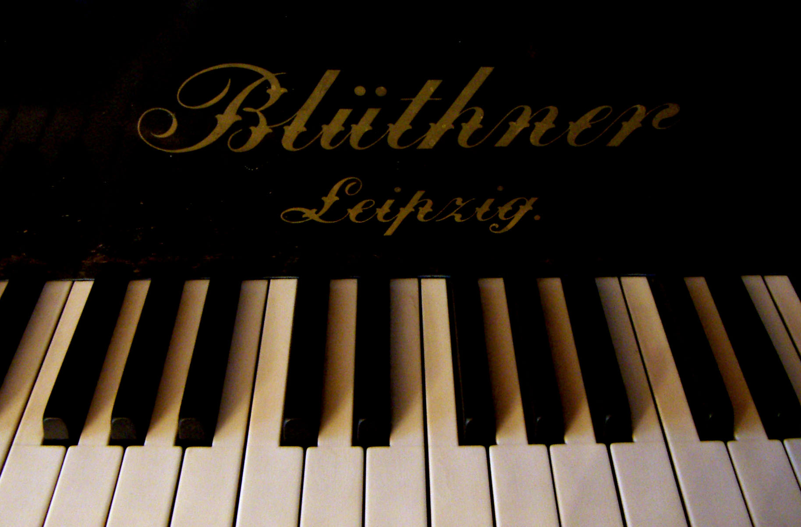

Un Poco de Historia
El florentino Bartolomeo Cristofori inventó la primera versión del instrumento: el clavicordio o el llamado gravecembalo col piano e forte en italiano.
El piano tiene su origen en Florencia, Italia. Surge de la evolución del clavicordio y del címbalo, dos instrumentos de cuerda pulsada. Bartolomeo Cristofori (1655-1731) desarrolla la idea de apoyar los dedos sobre teclas que accionan martillos los cuales golpean las cuerdas.
Poco a poco, el instrumento evoluciona, y una familia alsaciana de origen alemán mejora la idea y el proceso de golpear los martillos: la familia Silbermann. Hacia 1770, nace el pianoforte, el instrumento estrella de la época clásica en la música de J.S Bach (1685-1750) pasando por W. A. Mozart (1756-1791) y Schubert (1797-1828).
El fin del siglo XIX ve el auge de la Revolución Industrial y al mismo tiempo el pianoforte experimenta las siguientes mejoras:
- Evolución de la sonoridad, mejora de la precisión
- Flexibilidad de las teclas y del teclado
- Mejora de la resistencia con cuerdas de acero

Para las compañías industriales de los años 1850-1870, el piano se convierte en una salida económica, un mercado próspero que había que explotar. El primer gran fabricante industrial de pianos fue un alemán llamado Blüthner. Los pianos ahora son más estéticos, más robustos, más potentes. Esta marca contribuye a darle al piano su rango de instrumento de prestigio.
No es hasta 1880-1890 que el piano tal y como lo conocemos hoy en día tome su forma. En 1885, había 20 firmas que producían «pianos modernos», de las cuales Blüthner, Broadwood, Pleyel, Erard y Stein acaparaban el 70% de la producción mundial de pianos. La Revolución Industrial y el trabajo científico sobre los problemas acústicos y mecánicos interrumpen el trabajo de los artesanos, que no se pueden aplicar grandes procesos de fabricación.
Para promocionar su imagen y tener su hueco en este nuevo mercado tan competitivo, las firmas buscan la imagen de grandes pianistas de la época para ganar en competitividad. Así, Beethoven, Schubert o Chopin prestan sus nombres a los grandes fabricantes de pianos.
El piano se convierte en un instrumento codiciado por la belleza de su música y en un mueble de prestigio deseado por la delicadeza de sus materiales. A principios del siglo XX, el cuero que recubre las cabezas de los martillos se reemplaza por lana de cordero, embelleciendo aún más la sonoridad de las teclas del piano.
El piano se internacionaliza en América (la firma Steinway sigue siendo pionera en el mundo del piano) y en Asia (con la célebre Yamaha en Japón, creada en la era Meiji). Tocar el piano se convierte, por tanto, en un placer mundial.

Gracias a las investigaciones sobre la excelencia y la calidad del instrumento, la industria del piano sigue prosperando hoy en día. La era digital y la web 2.0 no perjudican la vida de este noble instrumento: actualmente, el piano electrónico ofrece las mismas sonoridades que un piano vertical, pero siendo más portátil, ligero, compacto y desmontable. El desarrollo del piano electrónico posibilitó que la clase media descubriera este instrumento y contratara a profesores de piano para aprender a tocarlo.
Tras los años estrella del jazz (1940-1950), la época dorada del tango (1930-1950), el auge del rock desde los años 60 y el desarrollo de la sociedad de consumo, el piano está por todas partes: en el cine, en la televisión, en la radio, en los festivales de música, en las escuelas de música, en las clases de música del colegio y en los hogares.
Aqui tienes un video de datos curiosos sobre el piano por si te interesa uwu